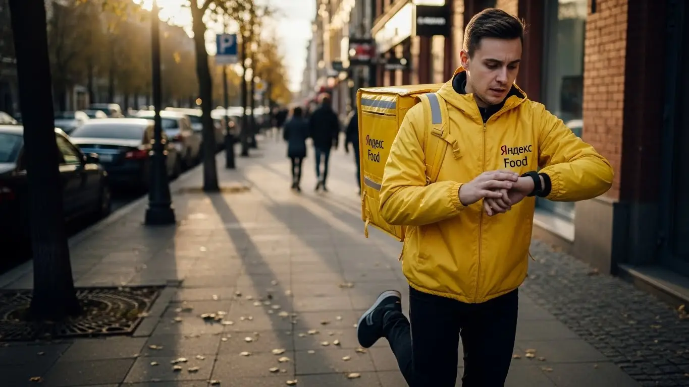
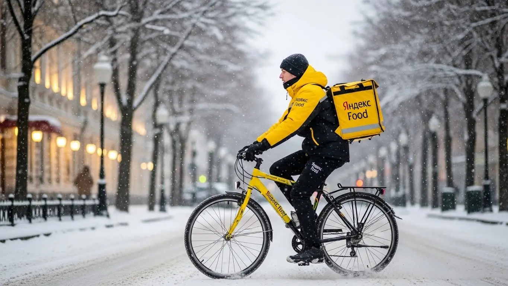
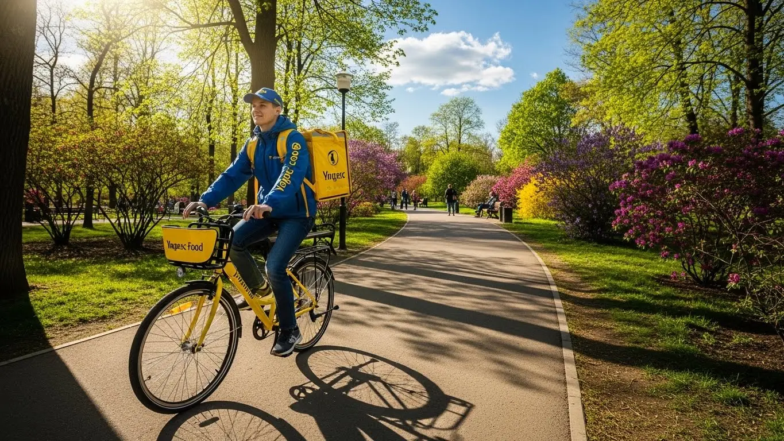

Работа курьером Яндекс Еда в Клине: доход и условия в 2025-2026 годах
- Работа курьером Яндекс Еды в Клине: для кого эта вакансия и что вы получите
- Сколько вы будете зарабатывать курьером в Клине: калькулятор дохода и разбор выплат
- Реальный заработок курьера в Клине: смены и месячный доход
- График работы и форматы занятости
- Требования к кандидату и документы
- Самозанятость, налоги и юридическая чистота
- Пошаговое оформление и первый выход на линию в Клине
- Пешком, на вело или на авто: что выгоднее в Клине
- Районы, маршруты и «топовые» зоны заказов в Клине
- Безопасность, страховка, штрафы и оплата простоя
- Плюсы и возможные минусы работы курьером в Клине
- Реальные истории и отзывы курьеров из Клина
- Ответы на частые вопросы
- Короткие ответы на главные вопросы
- Итоги и ваш следующий шаг
Все города
Здорово, будущий коллега. Думаешь, работа курьером в Клине — это просто сесть на велик или в машину, включить приложение и грести деньги лопатой? Как бы не так. Я тоже так думал, пока не столкнулся с реальностью: пробки на Ленинградке в пятницу вечером, убитые дороги в частном секторе за «Спутником» и ледяной дождь в ноябре, когда каждый заказ превращается в испытание. И главный вопрос новичка — не «сколько я заработаю?», а «как не уйти в минус после вычета расходов на бензин, еду и ремонт?».
Потому что работа курьером Яндекс Еда в Клине — это не спринт, а марафон со своей тактикой. Твой итоговый заработок зависит не столько от скорости, сколько от знания города и «внутрянки» системы. Нужно понимать, где в обед концентрируются заказы, а куда после восьми вечера лучше не соваться, как работает система приоритетов и почему иногда выгоднее постоять 15 минут в зоне высокого спроса, чем гнаться за копеечным заказом на другой конец города. Большинство новичков в Клине совершают одни и те же ошибки и в итоге разочаровываются, хотя могли бы зарабатывать прилично.
В этом гиде мы без розовых очков и рекламных обещаний разберём всю подноготную. Посчитаем, сколько чистыми можно заработать в Клине на машине, велосипеде и пешком с учётом местных реалий. Я покажу на карте «рыбные» районы и «мёртвые» зоны. Расскажу, как погода и сезоны влияют на доход, за что реально штрафуют и как этого избежать. Если вы хотите сразу ознакомиться с ключевыми условиями и подать заявку, то вся актуальная информация про работу курьером Яндекс Еда в Клине собрана на официальной странице для соискателей. Короче, это будет полная выжимка опыта, которая сэкономит тебе кучу времени, нервов и денег.
Меня зовут Алексей. Я не теоретик из интернета, а человек, который сам откатал не одну тысячу километров по Клину с жёлтой сумкой за спиной, а теперь держу свой небольшой таксопарк-партнёр и вижу всю картину изнутри. Так что никакой рекламной шелухи не будет — только мясо, только хардкор и реальный опыт. В общем, садись поудобнее. Сейчас я разложу тебе всю кухню работы курьером в Клине по полочкам.
Прежде чем мы углубимся в детали, вот короткий навигатор по ключевым темам, которые мы разберём в статье.
Что ты точно узнаешь из этого разбора
В этой статье ты ТОЧНО узнаешь:
- Сколько РЕАЛЬНО можно заработать в Клине за смену пешком, на велосипеде и на авто?
- В каких районах Клина больше всего заказов и как не кататься впустую?
- Как погода, время суток и выбор слотов в приложении влияют на итоговый доход?
- За что могут снизить рейтинг или заблокировать, и как работает бесплатная страховка на смене?
- Зачем нужна самозанятость, как её оформить за 10 минут и сколько платить налогов?
- Что такое оплата простоя и как она защищает твой заработок, если заказов мало?
А если тебе некогда читать всю статью — переходи сразу к заключению, где ты найдёшь короткие ответы на все эти вопросы и указания, в каких разделах искать подробности.
А чтобы сразу оценить основные цифры и условия, взгляни на эту инфографику.
Работа курьером в Клине: ключевые цифры
Работа курьером Яндекс Еды в Клине: для кого эта вакансия и что вы получите
Эта работа — не просто подработка, чтобы перебиться до зарплаты, а реальный инструмент для заработка. В Клину, где нет суеты мегаполиса, доставка стала особенно востребованной. Здесь можно работать в своём темпе благодаря свободному графику, не тратя часы на дорогу до офиса, и получать деньги сразу. Это честная сделка: ты доставляешь заказы, а сервис Яндекс Еда платит тебе за это каждый день.
Главное, что нужно понять: здесь нет начальника, который стоит над душой. Твой основной инструмент — смартфон с приложением «Яндекс Про», а доход напрямую зависит от твоего желания работать. Для кого-то это станет отличной подработкой, а кто-то, разобравшись в системе, сделает доставку основной работой и будет зарабатывать не меньше, чем в офисе.

Кому подойдёт эта работа в Клине
По опыту скажу, что эта вакансия подходит очень разным людям. Это идеальный вариант для студентов. График можно подстроить под учёбу: выходить на пару часов после пар или работать только по выходным. Деньги приходят сразу, что для молодых ребят особенно важно.
Кроме того, это работа для тех, у кого нет опыта. Не нужно проходить долгие собеседования и доказывать, что ты чего-то стоишь. Всё просто: скачал приложение, прошёл короткое онлайн-обучение, взял фирменный термокороб и пошёл зарабатывать. Для старта потребуется оформить самозанятость, но это делается за 10 минут через интернет.
Это также отличный вариант для водителей, которые хотят стать курьером на своем авто, или для тех, кому просто нужна подработка со свободным графиком и быстрыми выплатами. Если ты ценишь свободу и хочешь, чтобы твой доход зависел только от тебя, — это твой вариант.
Главные преимущества для жителей районов 5-й микрорайон, 3-й микрорайон, Майданово
Одно из главных удобств работы курьером в Клине — возможность выходить на смены прямо из дома. Не нужно ехать через весь город в определённый «офис». Если ты живёшь, например, в 5-м или 3-м микрорайоне, можешь просто включить приложение и начать получать заказы Яндекс Еды или Яндекс Доставки из ближайших кафе, ресторанов и магазинов.
То же самое касается и жителей района Майданово. В этих жилых кварталах всегда есть спрос на доставку, особенно по вечерам и в выходные. Ты экономишь время и деньги на дорогу, работаешь на знакомых улицах и лучше ориентируешься. Это большое преимущество по сравнению с классической работой, куда нужно добираться по пробкам.
Краткое обещание по доходу и условиям
Давай по-честному, без заоблачных обещаний. В Клину курьер при частичной занятости (3–4 часа в день) может спокойно зарабатывать 1500–2000 рублей за смену. Если же работать полный день, то доход курьера на автомобиле может достигать 3500–4500 рублей и выше, особенно в дни высокого спроса. В месяц при полной занятости вполне реально выходить на зарплату в 60 000–80 000 рублей.
Ключевые условия простые и прозрачные. Ты работаешь, когда тебе удобно, — сам выбираешь слоты в приложении. Опыт не требуется, всему научат в процессе. И самое главное — ежедневные выплаты. Отработал смену — получил деньги на карту. Никаких задержек и ожиданий «дня зарплаты».
Вот недавний пример: парень-студент, 20 лет, живёт в 3-м микрорайоне. Ему нужны были деньги на новый телефон. Он работал как велокурьер каждый вечер после учёбы на 3–4 часа и плотно брал смены в выходные. За две с половиной недели спокойно заработал нужную сумму, не пропуская занятия и не влезая в долги.
В общем, работа курьером в Клину — это доступный и гибкий вариант заработка. Главные плюсы — свободный график, ежедневные выплаты и возможность работать в своём районе. Мой совет: если сомневаешься, попробуй начать с коротких смен в знакомом квартале — так ты быстро освоишься и поймёшь, подходит ли тебе такой формат.
Сколько вы будете зарабатывать курьером в Клине: калькулятор дохода и разбор выплат
Вопрос денег — самый главный. Важно понимать, что твой заработок — это не какая-то фиксированная ставка, а сумма нескольких составляющих. Система абсолютно прозрачна: в приложении «Яндекс Про» ты видишь, за что и сколько тебе начислено. Никаких скрытых вычетов или непонятных комиссий.
Давай разберём по косточкам, из чего складывается твой доход и как его можно прогнозировать. Это поможет тебе понять, сколько реально можно заработать в Клину и как влиять на свой итоговый чек.
Из чего складывается доход курьера
Твой заработок за смену — это не просто плата за количество заказов. Он состоит из нескольких частей, которые суммируются.
- Оплата за заказ. Базовая стоимость за то, что ты забираешь и доставляешь заказ.
- Доплата за расстояние. Чем дальше ехать от ресторана до клиента, тем больше доплата. Система считает оптимальный маршрут и начисляет деньги за каждый километр.
- Повышающие коэффициенты. В часы пик (обед, ужин), в плохую погоду или в зонах с высоким спросом стоимость заказов умножается на коэффициент. На карте в приложении такие зоны подсвечиваются — там можно заработать значительно больше.
- Бонусы. Сервис часто предлагает персональные цели. Например, выполни 10 заказов за день и получи дополнительно 500 рублей.
- Чаевые. Клиенты могут отблагодарить тебя за хорошую работу через приложение. Вся сумма чаевых идёт тебе, сервис не берёт с них комиссию.
- Оплата простоя. Важное преимущество. Если ты на плановом слоте, но заказов временно нет, сервис всё равно начисляет минимальную оплату за время ожидания. Ты не теряешь деньги.
Иногда также действует компенсация проезда на общественном транспорте, если нужно доехать до зоны с заказами. Все эти компоненты в сумме и формируют твой итоговый доход.
Как пользоваться калькулятором дохода
Чтобы прикинуть свой потенциальный заработок, на сайте есть специальный калькулятор. Пользоваться им просто: сначала выбираешь свой город — Клин. Затем указываешь, как планируешь доставлять: как пеший курьер, на велосипеде или на своем авто.
Далее отмечаешь, сколько часов в день и сколько дней в неделю ты готов работать. Например, 4 часа 5 дней в неделю. На основе этих данных и средней статистики по городу калькулятор покажет тебе примерный диапазон твоего дохода за день и за месяц. Это не стопроцентная гарантия, но очень хороший ориентир, чтобы понять, на какие цифры можно рассчитывать.
Прикинь свой доход в Клине
Твой примерный доход в месяц:
Расчёт основан на средней ставке в Клине (~420 ₽/час). Реальный доход зависит от спроса, бонусов и твоего способа передвижения. Это хороший ориентир, чтобы понять свои возможности.
Чтобы увидеть актуальные условия и сразу подать заявку, загляни на страницу про работу курьером Яндекс Еда в твоём городе — там всегда свежая информация и форма для анкеты.
Примеры расчёта для пешего, вело- и авто‑курьера в Клине
Чтобы было понятнее, давай рассмотрим три реальных сценария для Клина.
- Пеший курьер. Работает в центре, в районе Советской площади. Здесь много кафе и заказы на короткие расстояния. За 4-часовую смену в будний вечер он выполняет 8–10 заказов и зарабатывает в среднем 1500–1800 рублей с учётом бонусов.
- Велокурьер. Его зона — спальные районы, например, маршруты между 3-м и 5-м микрорайонами. На велосипеде он передвигается быстрее пешего и берёт заказы на средние дистанции. За 6 часов работы в субботу его доход может составить 2600–3000 рублей.
- Автокурьер. Работает по всему городу и может брать заказы в пригород. В дождливый день он выходит на полную 8-часовую смену. За счёт повышенного коэффициента, большого количества заказов и доплат за дальние расстояния его заработок за день может достигать 4000–5000 рублей.
Один из моих знакомых водителей-курьеров выработал свою стратегию. Утром он берёт заказы из гипермаркетов в спальных районах. К обеду перемещается в центр, где много заказов из ресторанов. А вечером, когда спрос самый высокий, он не боится брать дальние доставки по всему Клинскому району. В итоге за неделю его чистый доход после вычета расходов на бензин составляет 20–25 тысяч рублей.
Итак, твой заработок — это гибкая система, на которую ты можешь влиять. Понимая, из чего он складывается, ты сможешь работать эффективнее. Мой совет: активно используй карту спроса в приложении «Яндекс Про», чтобы видеть зоны с повышенными коэффициентами, и не бойся работать в плохую погоду — именно тогда доход курьера максимальный.

Реальный заработок курьера в Клине: смены и месячный доход
Давай о главном — о деньгах. Никаких заоблачных обещаний, только реальные цифры и факты, которые я вижу каждый день у своих ребят в Клине. Заработок курьера — это не фиксированная зарплата, а результат твоей скорости и смекалки. На доход влияют разные условия работы, но определённые рамки, конечно, есть.
Диапазон дохода для подработки и полной занятости
Если ты ищешь подработку на 2–4 часа в день, чтобы были деньги на карманные расходы или закрыть небольшой кредит, то цифры в Клине примерно такие. Пеший курьер за вечернюю смену может заработать 700–1200 рублей. Велокурьер за то же время за счёт скорости привезёт больше — где-то 1000–1800 рублей. Самый высокий доход у курьера на своем авто: за 4 часа можно получить 1500–2500 рублей. Это «грязный» доход, из которого нужно вычесть бензин и налог для самозанятых.
При полной занятости, когда ты на линии по 8–10 часов 5 дней в неделю, месячная зарплата уже серьёзнее. Пеший курьер может рассчитывать на 35 000–50 000 рублей. Велосипедист, который не боится крутить педали, — на 50 000–70 000 рублей. Водитель на своей машине при грамотном подходе стабильно делает 70 000–100 000 рублей в месяц. Это не предел, активные ребята зарабатывают и больше, особенно в сезон.
Как район, время суток и погода влияют на доход
Запомни три кита высокого заработка: пиковые часы, плохая погода и «жирные» районы. В Клину, как и везде, люди активно заказывают еду в обед (с 12:00 до 14:00) и на ужин (с 18:00 до 21:00). В это время, а также в выходные и праздники, на карте в «Яндекс Про» появляются зоны с повышенным спросом — они подсвечиваются фиолетовым. Работа в такой зоне умножает стоимость каждого заказа на коэффициент, иногда в 1.5–2 раза.
Погода — твой лучший друг. Как только начинается дождь или снегопад, заказов становится вал, а курьеров на линии — меньше. Система сразу поднимает коэффициенты, чтобы мотивировать тех, кто не испугался. Плюс, клиенты в такую погоду чаще оставляют хорошие чаевые. Районы тоже играют роль: в центре, в районе Советской площади и улицы Гагарина, много заказов из ресторанов по линии Яндекс Еды, а в спальных микрорайонах (например, 5-й и 6-й) — больше доставок из продуктовых магазинов.
Советы по увеличению заработка от опытных курьеров
Чтобы не просто работать, а именно зарабатывать, нужно подходить к делу с головой. Во-первых, планируй смены: бронируй плановые слоты в приложении на пиковые часы, чтобы получать приоритет в заказах. Во-вторых, изучи город. Пойми, где сосредоточены популярные кафе, а где — крупные жилые комплексы. Не гоняйся за одним дорогим заказом на окраину, если потом полчаса будешь возвращаться пустым.
Сочетай форматы, если есть возможность. Например, в хорошую погоду по центру Клина выгоднее передвигаться на велосипеде — нет проблем с парковкой. А когда нужно развозить тяжёлые заказы из гипермаркетов, без машины и вместительного термокороба не обойтись. И главный совет: будь вежлив. Простая улыбка и пожелание приятного аппетита могут принести 100–200 рублей чаевых с одного заказа, а за день набегает приличная сумма.
Вот недавний пример. Парень-велокурьер в Клину решил поработать в пятницу вечером, когда пошёл сильный ливень. Многие его коллеги ушли с линии. Он же надел дождевик и продолжил доставлять. За 4 часа в центре, где всё горело фиолетовым, он сделал почти 3000 рублей — столько он обычно зарабатывает за целый день в хорошую погоду.
Твой доход в Клине напрямую зависит от твоего подхода. Можно работать спустя рукава и получать средние деньги, а можно анализировать спрос и погоду, чтобы зарабатывать ощутимо больше. Главное — не ленись, когда другие отдыхают: в праздники, выходные и в дождь.
График работы и форматы занятости
Главный плюс этой работы, который цепляет многих, — это свободный график. Ты сам себе начальник и решаешь, когда и сколько работать. Не нужно отпрашиваться или писать заявления на отгул. Нужно поехать по делам днём — пожалуйста. Хочешь устроить выходной посреди недели — без проблем. Но эта свобода требует самодисциплины, чтобы превращаться в стабильный доход.

Подработка после учёбы или основной работы
Формат подработки идеален для студентов и тех, у кого уже есть основная работа. Например, студент Клинского филиала РГСУ может выходить на смены на велосипеде после пар, с 17:00 до 21:00. Работая так 4–5 дней в неделю, он спокойно заработает 15 000–20 000 рублей в месяц. А благодаря опции ежедневных выплат деньги на личные расходы будут всегда под рукой.
Другой сценарий: ты работаешь в офисе с 9 до 18 и у тебя есть машина. Можно включать приложение по дороге домой, беря один-два заказа по пути. А в пятницу вечером и в субботу выделять по 5–6 часов на полноценные смены. Такой режим может приносить дополнительные 30 000–40 000 рублей в месяц — серьёзная прибавка к основной зарплате.
Полная занятость: как выглядит типичный день курьера
Если рассматривать работу курьером как основную, день строится вокруг пиков спроса. Типичный график автокурьера в Клине выглядит так: выход на линию около 11:00, до обеда идут спокойные заказы из магазинов и аптек. С 12:30 до 15:00 — первый пик, обеденный. В это время лучше держаться ближе к центру, где много офисов и кафе.
После 15:00 наступает затишье. Это хорошее время, чтобы пообедать самому, заправиться или выполнить пару заказов от Яндекс Доставки. Основная работа начинается с 18:00 и длится до 22:00 — это вечерний пик, самый прибыльный. Люди возвращаются с работы и заказывают ужины, продукты на вечер. Заказы идут один за другим. После 22:00 спрос падает, и можно либо завершать смену, либо ловить последние «ночные» доставки, если есть силы.
Как планировать слоты и выходы через приложение «Яндекс Про»
Работа в свободном графике не означает хаос. Чтобы зарабатывать стабильно, используй инструмент планирования в «Яндекс Про» — плановые слоты. Это отрезки времени от 2 до 12 часов, которые ты заранее бронируешь в определённом районе. Курьеры на слотах получают приоритет при распределении заказов, а на некоторые смены действует гарантия минимального дохода.
Процесс простой: заходишь в «Расписание», выбираешь день и видишь доступные слоты в разных зонах Клина. Выбираешь подходящий и подтверждаешь. Главное — быть в указанной зоне к началу слота и нажать кнопку «На линии». Опоздания или раннее завершение снижают рейтинг Активности, а высокий рейтинг — это ключ к хорошим заказам.
Был у меня водитель, который поначалу игнорировал слоты и выходил на линию когда вздумается. В итоге он часто сидел без заказов и жаловался на низкий доход. Я посоветовал ему распланировать неделю вперёд, забронировав вечерние и обеденные слоты. Уже через неделю его заработок вырос почти в полтора раза, потому что он перестал тратить время на пустое ожидание.
Гибкий график даёт свободу, но без планирования через «Яндекс Про» эта свобода может обернуться низким доходом. Мой совет: используй приложение по максимуму. Бронируй слоты на самые «хлебные» часы заранее — это залог стабильности и хороших денег.
Требования к кандидату и документы
Многих новичков пугает, что для работы курьером нужен диплом или особые навыки. На самом деле, устроиться можно и без опыта, а список документов минимальный. Главное — ответственность и желание работать. Давай разберём, какие условия и требования нужно выполнить, чтобы стать курьером в Клину.
Возраст, гражданство и базовые условия
Чтобы стать партнёром сервиса Яндекс Еда, нужно соответствовать нескольким простым условиям. Ничего сверхъестественного, но знать их необходимо.
Первое — возраст. Строго с 18 лет. Никаких исключений, даже с согласия родителей, для прямого сотрудничества с сервисом нет. Это связано с полной материальной ответственностью и необходимостью оформления статуса самозанятого, что в полной мере доступно только совершеннолетним.
Второе — гражданство. Подойдёт паспорт гражданина РФ или одной из стран Евразийского экономического союза (ЕАЭС): Беларусь, Казахстан, Армения, Киргизия. Если ты гражданин другой страны, понадобится вид на жительство (ВНЖ) или разрешение на временное проживание (РВП) и другие документы, подтверждающие право на работу в России.
Наконец, общие условия. Тебе понадобится смартфон на Android, так как рабочее приложение «Яндекс Про» работает только на этой системе. Также важна базовая физическая подготовка. Никто не требует олимпийских рекордов, но пеший курьер или велокурьер должен быть готов проводить на ногах по несколько часов. Для курьеров на своем авто, само собой, нужны права категории «В» и исправный автомобиль.
Какие документы нужны для работы курьером
Пакет документов для оформления минимальный, его можно собрать за один вечер без очередей и походов по инстанциям. Вот что понадобится:
- Паспорт. Основной документ, удостоверяющий твою личность. Для граждан ЕАЭС — национальный паспорт с нотариально заверенным переводом на русский язык.
- ИНН (Идентификационный номер налогоплательщика). Он нужен для регистрации в качестве самозанятого и уплаты налогов. Если ты не помнишь свой номер, его можно за пару минут бесплатно узнать на сайте Федеральной налоговой службы (ФНС) по паспортным данным.
- Банковская карта. Нужна личная дебетовая карта любого российского банка, оформленная на твоё имя. Именно на неё сервис будет перечислять ежедневные выплаты за выполненные заказы. Карта родственников или друзей не подойдёт.
- Медицинская книжка. Чаще всего для доставки запечатанных заказов из ресторанов она не требуется. Но если планируешь доставлять продукты из магазинов или дарксторов (например, Яндекс Лавки), медкнижка может понадобиться. Этот момент лучше уточнить при подключении в Клину, так как условия могут меняться.
Как видишь, ничего сложного. Большинство этих документов и так у тебя под рукой. Главное — заранее всё проверить и подготовить, чтобы процесс регистрации прошёл максимально быстро.
Можно ли работать с 16 лет и какие есть альтернативы
Это один из самых частых вопросов. Ответ однозначный: нет, стать курьером-партнёром Яндекс Еды с 16 или 17 лет нельзя. Минимальный возраст для оформления — 18 лет. Это жёсткое правило связано с законодательством: статус самозанятого и полная ответственность за заказы доступны только совершеннолетним.
Я понимаю желание подростков заработать, но крупные сервисы — не лучший вариант из-за юридических тонкостей. Однако это не значит, что в Клину нет других возможностей для подработки. Можно рассмотреть более традиционные варианты: раздача листовок, работа промоутером, помощь в местных кафе или магазинах. Иногда небольшие локальные пиццерии или суши-бары ищут помощников на своих условиях. Главное — всегда проверять, чтобы трудоустройство было официальным, чтобы не нарваться на обман.
Недавно ко мне обращался студент первого курса из клинского колледжа, которому как раз исполнилось 18. Он думал, что оформление займёт неделю. Мы за 5 минут нашли его ИНН на сайте налоговой, сфотографировали паспорт, и он подал заявку. На следующий день парень уже получил термокороб и вышел на свой первый слот. Вся «бюрократия» заняла меньше часа.
Как видишь, требования к кандидатам прозрачные и адекватные. Если тебе есть 18 лет, есть гражданство РФ или ЕАЭС и базовые документы, то никаких преград для старта нет. Советую заранее подготовить фото документов в телефоне, чтобы заполнить анкету за 15 минут.
Самозанятость, налоги и юридическая чистота
Многих отпугивает слово «самозанятость». Кажется, что это сложно, связано с отчётами и налоговой. На самом деле, для курьера это самый простой и легальный способ оформления. Такой формат позволяет получать официальный доход и избавляет от головной боли.
Почему курьеры Яндекс Еды работают как самозанятые
Работа курьером — это не трудоустройство в штат со строгим графиком. Ты — независимый партнёр сервиса, который оказывает услуги по доставке. Именно для такого формата со свободным графиком и был создан налоговый режим «Налог на профессиональный доход» (НПД), или самозанятость.
Вот его ключевые плюсы:
- Официальный доход. Все заработки легальны. С таким доходом можно без проблем взять кредит в банке или подтвердить его для визы.
- Простота. Никакой бухгалтерии и сложных деклараций. Всё взаимодействие с налоговой происходит автоматически.
- Свободный график. Ты сам решаешь, когда и сколько работать. Статус самозанятого идеально подходит для такого формата подработки или основной занятости.
- Безопасность. Ты работаешь в правовом поле. Это надёжнее, чем получать деньги «в конверте» и переживать о проблемах с налоговой.
По сути, сервис берёт на себя поиск заказов и всю логистику, а ты — качественное выполнение доставки. Самозанятость — это просто юридическая форма, которая делает это сотрудничество прозрачным и законным для обеих сторон.
Как за 10 минут оформить самозанятость через «Мой налог»
Регистрация статуса самозанятого (или плательщика НПД) занимает несколько минут прямо в телефоне. Никуда ходить не нужно. Вот пошаговая инструкция:
- Скачай приложение. Найди в Google Play официальное приложение ФНС России — «Мой налог».
- Начни регистрацию. Открой приложение и выбери самый простой способ — «Регистрация по паспорту РФ».
- Отсканируй паспорт. Наведи камеру на главный разворот паспорта. Приложение само распознает все данные. Проверь, чтобы всё было корректно.
- Сделай селфи. Приложение попросит сделать фотографию лица для подтверждения личности. Это быстрая и стандартная процедура.
- Подтверди регистрацию. Выбери регион ведения деятельности — Московская область. После этого нажми кнопку подтверждения.
Вот и всё. Через несколько минут придёт уведомление о регистрации в качестве плательщика НПД. Процесс занимает не больше 10 минут, без госпошлин и визитов в налоговую.
Сколько и как платить налоги
Система налогов для самозанятых — самая простая и выгодная. Ставка налога фиксированная и зависит от источника дохода:
- 6% — с доходов от юридических лиц (это выплаты от партнёра Яндекс Еды).
- 4% — с доходов от физических лиц (например, чаевые от клиентов).
Процесс уплаты налога полностью автоматизирован, считать ничего не нужно. Приложение «Яндекс Про» само передаёт данные о твоих заработках в налоговую.
В конце месяца приложение «Мой налог» рассчитает сумму и пришлёт уведомление. Оплатить налог можно там же, одной кнопкой с привязанной карты. Срок уплаты — до 28 числа следующего месяца.
Кроме того, всем новым самозанятым государство даёт бонус — налоговый вычет в размере 10 000 рублей. Он автоматически применяется к твоим налогам и снижает ставку до 4% (с доходов от юрлиц) и 3% (с доходов от физлиц), пока вся сумма бонуса не израсходуется. Это приятная поддержка на старте.
Один мой знакомый водитель-курьер в Клину раньше таксовал «в серую». Постоянно боялся проверок, а банки отказывали в кредите. Когда он перешёл на доставку в Яндекс и оформил самозанятость, сначала ворчал про налоги. Но за первый месяц его доход составил около 50 000 рублей, а налог к уплате (с учётом вычета) — меньше 2000. Он заплатил его одной кнопкой и сказал, что официальный доход и спокойствие стоят этих денег.
В итоге, самозанятость — это не проблема, а решение. Это твой способ работать честно, иметь официальный доход и не бояться проверок. Регистрация элементарная, налоги низкие, а их уплата автоматизирована. Не бойся этого шага — он открывает дорогу к стабильному и легальному заработку курьером.
Пошаговое оформление и первый выход на линию в Клине
Многие думают, что устроиться курьером, особенно без опыта, — это долгая история с бумажками и собеседованиями. На деле всё гораздо проще и быстрее, особенно если это подработка со свободным графиком. Весь процесс от заявки до первого заработка занимает от нескольких часов до пары дней. Главное — не тушеваться и следовать простым шагам. Система специально сделана так, чтобы убрать лишнюю бюрократию и позволить тебе как можно скорее начать зарабатывать.
Шаг 1–2: анкета и онлайн‑обучение
Всё начинается с простой анкеты на сайте. Никаких резюме на пять страниц не нужно: указываешь ФИО, номер телефона, город Клин и гражданство. Это занимает буквально пару минут. После этого твои данные уходят на быструю проверку. Пока она идёт, тебе откроется доступ к короткому онлайн-обучению. Для работы понадобится статус самозанятого, но его можно оформить позже — это тоже делается онлайн за 10–15 минут.
Не пугайся слова «обучение». Это не лекции в институте, а несколько коротких видео и инструкций прямо в приложении. Тебе расскажут об основах: как пользоваться приложением «Яндекс Про», как общаться с клиентами и представителями ресторанов, что делать в нестандартных ситуациях. В конце будет небольшой тест, чтобы убедиться, что ты всё понял. Вопросы там элементарные, из серии «Что делать, если пролил напиток?». Справится любой, кто внимательно смотрел ролики.
Шаг 3: получение сумки и доступа к заказам в Клине
После успешного прохождения теста и проверки документов остаётся последний шаг перед выходом на линию — получить экипировку. Главное — это фирменный термокороб, или термосумка. Без неё работать в сервисах «Яндекс Еда» и «Яндекс Доставка» нельзя, так как она сохраняет температуру заказов, будь то горячая пицца или холодное мороженое.
В Клину сумку и другую экипировку, если она нужна, обычно получают через курьерские центры или офисы партнёров-таксопарков. Точный адрес всегда можно посмотреть в приложении «Яндекс Про» после того, как твою анкету одобрят. Иногда есть вариант с доставкой на дом. Как только термокороб у тебя на руках и твой профиль в приложении активирован, ты официально готов принимать заказы.
Шаг 4: первый слот и первый доход
Теперь самое интересное. Открываешь «Яндекс Про», выбираешь на карте города удобный для тебя район и свободный временной интервал — это и есть «слот». Для первого раза советую выбрать знакомый тебе квартал, где ты хорошо ориентируешься. Так будет спокойнее, и ты не будешь тратить время на плутания с навигатором.
Выбираешь слот, например, на 2–3 часа, выходишь на линию и ждёшь первый заказ. Приложение само найдёт ближайший к тебе и пришлёт уведомление. Принимаешь его, следуешь инструкциям, доставляешь — и вот, первый доход уже на твоём балансе. Многие ребята получают свои деньги уже в день регистрации или на следующее утро. Никаких «двух недель до зарплаты» — сервис предлагает ежедневные выплаты на карту.
Вот тебе живой пример. Парень из нашего парка, Сергей, решил подработать. В понедельник утром заполнил анкету, к обеду прошёл обучение. Вечером заехал в офис партнёра на Литейной, забрал сумку. Во вторник после основной работы взял короткий слот на три часа в своём 5-м микрорайоне. Выполнил 4 заказа и заработал первые 950 рублей. Говорит, был удивлён, насколько всё просто и быстро.
В итоге, весь процесс от анкеты до денег на счёте — это дело одного-двух дней. Главное — соответствовать простым требованиям, иметь под рукой нужные документы и желание работать. Мой совет: не откладывай, если решил попробовать. Чем быстрее заполнишь анкету, тем быстрее выйдешь на линию и поймёшь, твоё это или нет.
Пешком, на вело или на авто: что выгоднее в Клине
Выбор транспорта — одно из ключевых решений, которое напрямую влияет на твой заработок, усталость и то, какие заказы ты сможешь выполнять. В Клине, как и в любом другом городе, у каждого способа передвижения есть свои плюсы и минусы. Нет универсально «лучшего» варианта, есть тот, который подходит именно тебе, твоему району и стилю работы. Давай разберёмся по порядку.
Пеший курьер: для центра и плотной застройки в Клине
Если у тебя нет машины или велосипеда, или ты просто хочешь совмещать работу с прогулками — формат пешего курьера твой вариант. Он идеально подходит для центральной части Клина, где много кафе и ресторанов сосредоточено на небольшом пятачке. Районы вокруг Советской площади, улиц Гагарина и Карла Маркса — это классическая зона для пеших курьеров. Здесь короткие расстояния, можно срезать через дворы, и не нужно искать парковку.
Конечно, много заказов за час пешком не унесешь, и доход будет ниже, чем у ребят на колёсах. Но для подработки на 2–4 часа в день, особенно в обеденное или вечернее время, это отличный старт. К тому же, нет никаких расходов на топливо или обслуживание транспорта. Ты просто надеваешь удобную обувь, берёшь сумку и идёшь зарабатывать.
Велокурьер: быстрые доставки между спальными районами
Велосипед — это золотая середина. Как велокурьер, ты уже не зависишь от пробок, как водитель, но при этом гораздо быстрее пешехода. Для Клина это особенно актуально при доставках между соседними жилыми районами, например, из Майданово в посёлок 31 Октября или в 6-й микрорайон. На машине там можно постоять на светофорах, а на велосипеде проехал по тропинкам — и ты на месте.
Велосипед даёт тебе возможность брать больше заказов в час и работать на более длинных дистанциях, что сразу увеличивает доход. Плюс, это отличная кардиотренировка, за которую тебе ещё и платят. Многие мои знакомые курьеры так и называют это — «оплачиваемый фитнес». Главное — следить за состоянием велосипеда и соблюдать правила безопасности на дороге.
Водитель‑курьер: заказы по всему городу и пригороду Высоковска и Решетниково
Автомобиль — это инструмент для максимального заработка. На машине ты можешь брать самые дорогие заказы: большие и тяжёлые доставки из супермаркетов и Яндекс Маркета, несколько заказов одновременно, а главное — доставки на дальние расстояния. Работа на авто особенно выгодна, когда нужно отвезти заказ на окраину Клина или в пригородные населённые пункты, такие как Высоковск или Решетниково.
В плохую погоду — дождь, снегопад, сильный мороз — спрос на доставку резко возрастает, а вместе с ним и повышающие коэффициенты. В такие моменты пешие и велокурьеры сходят с линии, а водители снимают все сливки. Конечно, есть расходы на бензин и амортизацию, но при грамотном подходе они с лихвой окупаются высоким доходом.
Сравнение форматов доставки в Клину
| Параметр | Пеший курьер | Велокурьер | Водитель-курьер |
|---|---|---|---|
| Зона работы | Центр, плотная застройка (радиус 1–2 км) | Центр и спальные районы (радиус 3–5 км) | Весь город и пригороды (до 15–20 км и дальше) |
| Скорость и заказов/час | Низкая (1–2 заказа) | Средняя (2–4 заказа) | Высокая (3–5+ заказов) |
| Расходы | Практически нет (только удобная обувь) | Минимальные (обслуживание велосипеда) | Существенные (бензин, амортизация, страховка) |
| Тип заказов | Лёгкие, из ближайших кафе | Стандартные, из кафе и магазинов | Любые, включая тяжёлые, крупные и дальние |
| Преимущества | Бесплатный фитнес, нет затрат, работа в центре | Скорость, маневренность, экономия на топливе | Комфорт, высокий доход, работа в любую погоду |
Когда я только начинал, сам долгое время катался на велосипеде. Летом и осенью всё было отлично, но с первым снегом понял, что теряю в деньгах. Заказов в плохую погоду было много, а я физически не мог их быстро развозить. Пересел на свою старенькую «девятку» и сразу почувствовал разницу. За одну метель в декабре, работая 8 часов, я сделал почти вдвое больше, чем в обычный день на велосипеде, потому что брал самые «жирные» заказы на окраины, куда никто не хотел ехать.
В итоге, выбор за тобой. Оцени свои возможности, район, в котором планируешь работать, и цели по доходу. Для подработки в центре хватит и своих двоих. Хочешь зарабатывать больше и быть мобильнее — садись на велосипед. А если нацелен на максимальный заработок и готов работать по всему городу — без машины не обойтись. Мой совет: начни с того, что у тебя уже есть. Поработаешь, поймёшь механику, а дальше уже решишь, стоит ли вкладываться в другой транспорт.
Районы, маршруты и «топовые» зоны заказов в Клине
Чтобы работа курьером в Клине приносила хороший доход, а не только сжигала бензин, нужно понимать, где и когда «клюёт». Город небольшой, но со своими особенностями. Просто включить приложение и ждать у моря погоды — тактика для новичков, которая быстро съест и топливо, и энтузиазм. Главное правило — быть там, где люди заказывают еду и делают покупки прямо сейчас.
В Клину, как и везде, есть свои «рыбные места». Твоя задача — научиться их видеть на карте в «Яндекс Про» и совмещать с работой в своём районе. Не нужно метаться через весь город за одним заказом с высоким коэффициентом. Гораздо выгоднее сделать 3-4 доставки подряд в одной зоне, пусть и с меньшей оплатой за каждую. Стабильность решает.
Где больше всего заказов: ТРЦ, бизнес-центры и туристические места
Золотые жилы в любом городе — это точки притяжения людей. В Клине это, в первую очередь, торговые центры. Запомни два главных названия: ТРЦ «Дарья» на улице Карла Маркса и ТЦ «Континент» на Советской площади. В них сосредоточены не только магазины, но и популярные фуд-корты, откуда постоянно идут заказы из Яндекс Еды. В обеденное время (с 12:00 до 15:00) и по вечерам здесь всегда повышенный спрос.
Второй источник стабильных заказов — центральные улицы, где много офисов и административных зданий: район Советской площади, улицы Гагарина, Ленина. Сотрудники заказывают бизнес-ланчи, кофе, документы. Спрос здесь ровный в течение всего рабочего дня. Летом добавляются туристические зоны, например, район вокруг музея-заповедника Чайковского. Туристы и гуляющие горожане охотно заказывают еду в парки или к набережной. В таких зонах часто действуют повышающие коэффициенты, особенно в выходные.
Работа в своём районе: примеры для популярных жилых кварталов
Не стоит думать, что весь заработок только в центре. Работа рядом с домом — важное преимущество свободного графика: ты экономишь время и топливо. Такая подработка идеальна для спальных районов Клина, где тоже хватает заказов, особенно по вечерам и в выходные, когда люди не хотят готовить или выходить из дома.
Например, если ты живёшь в микрорайоне Майданово или в районе улицы 31-го Октября, у тебя под боком десятки многоэтажек. Здесь всегда есть заказы из местных пиццерий, суши-баров и сетевых магазинов вроде «Пятёрочки» или «Магнита». Ты отлично знаешь все дворы и подъезды, поэтому доставляешь заказы быстрее, чем курьер из другого района. Это позволяет выполнять больше доставок в час и, соответственно, больше зарабатывать, не наматывая лишние километры.
Как выбирать зоны и слоты в «Яндекс Про», чтобы не мотаться впустую
Приложение «Яндекс Про» — твой главный инструмент планирования. Основное, на что нужно смотреть, — это карта спроса. Зоны, подсвеченные фиолетовым цветом, означают самый высокий спрос и максимальные коэффициенты. Жёлтые и зелёные зоны — спрос умеренный, но стабильный. Не гоняйся за «фиолетом» на другой конец города — пока доедешь, спрос может упасть.
Лучшая стратегия — заранее планировать свои слоты. Открываешь приложение, смотришь прогноз спроса на завтра и выбираешь временные интервалы в тех зонах, где ожидается пик. Например, с 12:00 до 15:00 выбираешь слот в центре, а с 18:00 до 21:00 — в своём спальном районе. Так ты будешь получать заказы цепочкой, один за другим, с минимальным простоем и холостым пробегом. Это гораздо эффективнее, чем хаотично перемещаться по городу в надежде поймать один дорогой заказ.
Из практики: один курьер на автомобиле поначалу брал заказы по всему Клину. Мотался из 5-го микрорайона в посёлок 31 Октября, потом в центр. За 4 часа делал 5-6 заказов, сжигал кучу бензина и уставал. Я ему посоветовал сменить тактику: два часа работать строго в центре в обед, а потом на два часа перебазироваться в свой район на вечерние доставки. В итоге за те же 4 часа он стал стабильно делать 8-10 заказов. Доход вырос почти в полтора раза, а расходы на топливо сократились.
В общем, главный секрет работы в Клине — это знание города и умное использование карты спроса в приложении. Не гоняйся за призрачной выгодой, а работай там, где есть стабильный поток заказов. Стабильно выполнять десять заказов по 150 рублей в одном квадрате выгоднее, чем сделать три по 300, но с поездками через весь город.
Безопасность, страховка, штрафы и оплата простоя
Работа курьером, как и любая работа «в поле», связана с определёнными рисками. Ты проводишь много времени на ногах или за рулём, контактируешь с разными людьми. Важно понимать, какие условия работы предлагает сервис, чтобы защитить и твоё здоровье, и твой доход.
С другой стороны, от тебя тоже требуется ответственность. Соблюдение правил дорожного движения и стандартов сервиса — это не просто формальность, а основа твоей безопасности и стабильного заработка. Давай по-честному разберём, что тебя защищает, а за что могут и наказать.
Бесплатная страховка на сменах и что она покрывает
Это один из самых важных моментов, о котором многие новички даже не знают. Когда ты выходишь на запланированный слот, твоя жизнь и здоровье автоматически страхуются. Это абсолютно бесплатно для тебя, все расходы берёт на себя сервис. Страхование действует с момента начала слота и до его окончания.
Что оно покрывает? Практически любые несчастные случаи, которые могут произойти во время доставки. Например, поскользнулся зимой на льду и сломал руку, попал в ДТП на велосипеде или машине, укусила собака у клиента. В таких ситуациях ты можешь рассчитывать на денежную компенсацию до 2 миллионов рублей, которая покроет расходы на лечение и поможет финансово, пока ты не сможешь снова выйти на линию. Главное — сразу после происшествия связаться со службой поддержки через «Яндекс Про» и следовать их инструкциям.
Правила безопасности на дороге и при доставке
Банальные вещи, но именно они спасают от большинства неприятностей. Если ты пеший курьер, всегда переходи дорогу по пешеходному переходу, убедившись, что машины тебя пропускают. В тёмное время суток носи светоотражающие элементы. Если передвигаешься на велосипеде — шлем и фонари ночью обязательны. Помни, что ты полноценный участник движения.
Для курьеров на автомобиле правила стандартные: не превышай скорость, не отвлекайся на телефон, паркуйся так, чтобы не мешать другим. В плохую погоду — дождь, снег, гололёд — будь вдвойне осторожен, лучше потерять пару минут, но доехать без происшествий. С самим заказом тоже нужно быть аккуратным: не тряси пакеты с супами, не ставь пиццу набок. И если работаешь с наличными, держи деньги в надёжном месте и будь внимателен при расчётах.
Какие бывают штрафы и как их избежать
Да, в сервисе есть система контроля качества, и за серьёзные нарушения могут применяться санкции — от снижения рейтинга до временной или постоянной блокировки. Это не денежные штрафы, а скорее система мотивации работать хорошо. Чаще всего проблемы возникают из-за нескольких вещей: регулярные опоздания в ресторан или к клиенту, порча заказа, грубость в общении или отмена уже принятого заказа без веской причины.
Как этого избежать? Элементарно. Если ресторан задерживает заказ, не жди молча — напиши в поддержку, они зафиксируют причину задержки, и это не повлияет на твой рейтинг. Если не можешь найти адрес, позвони клиенту. Будь вежлив, даже если клиент не в настроении. По сути, нужно просто добросовестно выполнять свою работу и следовать инструкциям, которые тебе дадут на обучении. 99% всех «штрафов» можно избежать, если подходить к делу с головой и по-человечески.
Что такое оплата простоя и как она защищает ваш доход
Это ключевое преимущество, которое отличает Яндекс Еду от многих других доставок. «Оплата простоя» — это твоя финансовая подушка безопасности. Представь, ты вышел на запланированный слот, находишься в нужной зоне, готов принимать заказы, а их по какой-то причине нет — например, на улице отличная погода, и все пошли гулять, а не сидеть дома.
В такой ситуации сервис гарантирует тебе минимальный заработок. Даже если ты не выполнил ни одного заказа, тебе начислят определённую сумму за каждый час, проведённый на линии. Это защищает тебя от риска уйти домой с нулём в кармане и делает доход более предсказуемым. Ты потратил своё время, и это время будет оплачено. Такая гарантия даёт уверенность и позволяет планировать свой заработок более точно.
Был у меня случай с парнем-новичком. Он взял 4-часовой дневной слот в будний день, попал на какое-то затишье, получил всего два заказа. Уже расстроился, думал, зря время потратил. А вечером смотрит в приложении — ему начислили деньги не только за два заказа, но и доплатили за простой до гарантированной минималки. Он был приятно удивлён, что система реально работает и защищает курьера.
Итак, твоя безопасность и доход защищены страховкой и оплатой простоя. Но основа всего — твоя собственная ответственность. Соблюдай ПДД, будь вежлив и аккуратен с заказами, и тогда работа курьером будет приносить стабильный доход без неприятных сюрпризов. Не ищи, как обмануть систему, а работай по её правилам — так будет выгоднее всем.
Плюсы и возможные минусы работы курьером в Клине
Любая работа — это палка о двух концах. Где-то платят хорошо, но требуют сидеть в офисе от звонка до звонка. Где-то график свободный, но доход нестабильный. Работа курьером в сервисах Яндекса в Клине — не исключение. Здесь есть свои весомые плюсы, но и моменты, к которым нужно быть готовым. Давай по-честному разберём, что тебя ждёт, чтобы ты не строил воздушных замков и принимал решение с холодной головой.
Сильные стороны работы курьером в Клине
Начнём с хорошего. Главное, за что ценят эту работу — это свобода и быстрые деньги. Ты сам себе начальник: решаешь, когда и сколько работать. Можно выйти на пару часов вечером после основной работы или учёбы, а можно откатать полную смену на выходных. Никто не будет стоять над душой с претензиями, почему ты опоздал на 5 минут. Это идеальная подработка со свободным графиком.
Второй жирный плюс в Яндекс Еде — ежедневные выплаты. Заработал — получил. Не нужно ждать аванса и зарплаты неделями. Деньги приходят на карту через приложение Яндекс Про, и ты можешь сразу ими пользоваться. Для многих парней, особенно студентов или тех, кому срочно нужен дополнительный доход, это решающий фактор.
Кроме того, ты работаешь в своём районе. Живёшь в 5-м микрорайоне — можешь брать заказы там, не тратя время и деньги на дорогу до центра. Важно и то, что всё официально через оформление самозанятости: доход легальный. Плюс ко всему, на смене действует страховка жизни и здоровья — это не пустой звук, а реальная защита, если что-то пойдёт не так.
С какими сложностями чаще всего сталкиваются курьеры
Теперь о том, что может пойти не так. Во-первых, это физическая нагрузка. Если ты пеший курьер или велокурьер, будь готов много ходить или крутить педали. С непривычки ноги будут гудеть. Мой совет: начинай с коротких смен по 3–4 часа и обязательно купи удобную обувь, не экономь на этом. Во-вторых, погода. Дождь, слякоть, мороз или летний зной в Клине — твои постоянные спутники. Но здесь есть и обратная сторона: в плохую погоду заказов всегда больше, а коэффициенты и бонусы выше. Так что хороший дождевик и термобельё окупаются за пару смен.
Третья сложность — возможное ожидание заказов. Бывают «тихие» часы, когда сидишь и ждёшь. Чтобы этого избежать, выходи на линию в пиковое время: обед с 12 до 15 и ужин с 18 до 21, а также в выходные. Изучи карту спроса в приложении Яндекс Про — она показывает, где сейчас «горячо». Наконец, клиенты бывают разные. Большинство — адекватные люди, но иногда попадаются и не самые вежливые. Главное правило — сохранять спокойствие, быть профессионалом и в случае конфликта сразу писать в поддержку. Они помогут разрулить ситуацию.
Кому такая работа подходит, а кому лучше поискать другой формат
Давай начистоту. Работа курьером в Яндексе идеально подходит, если ты студент и тебе нужна подработка с гибким графиком, чтобы не пропускать пары в Клинском техникуме. Она хороша для тех, у кого есть основная работа, но хочется дополнительного дохода по вечерам или выходным. Если ты активный человек, не любишь сидеть на месте и для тебя «оплачиваемый фитнес» звучит как преимущество — это твой вариант. Также это отличный старт для тех, у кого нет опыта работы, — здесь всё просто и понятно, а требования минимальны.
С другой стороны, если ты ищешь стабильную зарплату до копейки каждый месяц, офисный комфорт и карьерную лестницу с должностями «старший менеджер», то работа курьером в доставке — это не то. Она не подойдёт тем, кто панически боится плохой погоды или не выносит физических нагрузок. Если для тебя важно работать в коллективе, общаться с коллегами и участвовать в корпоративах, здесь этого не будет. Ты работаешь в основном один на один с приложением и клиентами. Оцени себя трезво: если свобода и динамика для тебя важнее предсказуемости и офисного уюта, то стоит попробовать.
Расскажу про одного нашего парня, назовём его Олег. Он начал работать пешим курьером в Яндекс Еде летом, всё было отлично. Но осенью, когда в Клину начались затяжные дожди, он скис. Пару раз промок до нитки, замёрз и уже хотел всё бросить. Я ему посоветовал не рубить с плеча, а вложиться в нормальную экипировку: купить непромокаемые штаны, куртку и термоботинки. Он потратил около 4 тысяч, но в следующий же дождливый день за 5-часовую смену с повышенным коэффициентом заработал 3500 рублей «чистыми». Он понял, что сложность можно превратить в преимущество, если подойти к делу с умом.
В общем, работа курьером в Яндекс Доставке в Клине — это реальная возможность зарабатывать, где твой доход напрямую зависит от твоей активности и подготовки. Здесь есть свобода и быстрые деньги, но взамен требуется выносливость и умение подстраиваться под обстоятельства. Если ты готов к этому, то всё получится. Главный совет — не бойся сложностей, а учись их использовать в свою пользу.
Реальные истории и отзывы курьеров из Клина
Теория — это хорошо, но лучше всего о работе говорят реальные люди, которые каждый день доставляют заказы Яндекс Еды и Доставки в нашем городе. Я собрал несколько коротких историй от клинских курьеров, чтобы ты увидел картину с разных сторон. Это не выдуманные персонажи, а живые примеры того, как можно встроить доставку в свою жизнь.
История студента Клинского промышленно-экономического техникума, который совмещает учёбу и доставку
«Меня зовут Кирилл, мне 19. Учусь на программиста, пары заканчиваются в разное время, так что стандартная работа мне не подходит. Стал работать велокурьером в Яндекс Еде полгода назад. Живу в 6-м микрорайоне, обычно оттуда и начинаю смену. Беру слоты по 3-4 часа вечером, после учёбы, где-то с 18:00 до 22:00, плюс почти всю субботу катаюсь. В будни получается привозить по 1500–2000 рублей за вечер, в выходной день могу и 3500–4000 рублей сделать. В среднем за неделю выходит около 10-12 тысяч. Деньги трачу на свои хотелки, плюс родителям помогаю. Главное — не лениться и заранее планировать слоты в приложении Яндекс Про, особенно на выходные. Для студента это, по-моему, лучший вариант: и деньги есть, и учёбе не мешает».
Опыт автокурьера, который выходит в пиковые часы
«Я Андрей, 40 лет, работаю инженером на местном предприятии. У меня есть своя машина, и я решил, что она не должна простаивать. Работаю курьером на своем авто в Яндекс Доставке чисто для подработки, выхожу только в самое выгодное время: обеденный перерыв на основной работе, если успеваю, и вечера с 19:00 до 22:00, когда в городе самый высокий спрос на доставку еды и посылок. В выходные могу взять длинный слот на 6-8 часов. Езжу по всему Клину, часто бывают заказы в пригород — в Высоковск, Решетниково. На машине это не проблема, а платят за такие расстояния хорошо. Формат меня полностью устраивает: я не трачу время на ожидание, потому что в пиковые часы заказы идут один за другим. В месяц выходит дополнительно 30-40 тысяч рублей. Этого хватает, чтобы полностью покрыть расходы на машину и ещё остаётся на семью. Главное — ловить зоны с фиолетовым коэффициентом в Яндекс Про».
Мнение пешего или вело‑курьера о работе в центре и спальниках
«Меня зовут Ольга, я работаю велокурьером в Яндекс Еде уже почти год. По моему опыту, в Клине есть две основные зоны для работы, и у каждой свои особенности. Центр — это район Советской площади, улиц Гагарина, Литейной. Плюсы здесь очевидны: куча кафе и ресторанов, заказы сыплются постоянно, а расстояния между точками А и Б короткие. За час можно легко сделать 3-4 доставки. Минус — много людей, иногда сложно быстро проехать. А есть спальные районы, например, 3-й или 5-й микрорайоны. Там ресторанов меньше, но много заказов из продуктовых магазинов. Плюсы: спокойно, мало трафика, все дворы знаешь как свои пять пальцев. Минусы: заказы могут быть реже, а расстояния между ними больше. Я обычно чередую: в обед и вечером еду в центр за быстрыми заказами, а утром или днём спокойно работаю в своём районе. Привыкнуть пришлось к тому, что нужно постоянно следить за зарядом телефона и пауэрбанка, без них — как без рук».
Как видишь, в Яндекс Доставке в Клине есть место для всех: и для студентов на велосипедах, и для взрослых людей на автомобилях. Каждый находит свой ритм и свою стратегию заработка. Кто-то берёт количеством заказов в центре, кто-то — большими расстояниями и повышенным спросом по вечерам. Главный вывод из этих историй: сервис Яндекс Про даёт гибкий инструмент, а как им пользоваться и сколько зарабатывать — решаешь уже ты сам.
Ответы на частые вопросы
Собрал здесь ответы на те вопросы, которые мне задают чаще всего. Без воды, только по делу, чтобы у тебя сложилась полная картина, что к чему в этой работе в Клине.
Нужно ли оформлять самозанятость и как платить налоги?
Да, обязательно. Работа курьером в Яндекс Еде — это официальный доход, поэтому для трудоустройства нужен статус самозанятого. Не пугайся, это несложно: всё оформляется за 10 минут через приложение «Мой налог». Ты просто регистрируешься, привязываешь карту, и на этом оформление закончено. Налог для самозанятых составляет 6% с дохода от юридических лиц, то есть от Яндекса. Приложение само посчитает сумму, тебе останется только нажать кнопку «Оплатить» раз в месяц.
Какой телефон и интернет нужны для работы курьером?
Для работы курьером понадобится смартфон на базе Android версии 7.0 или новее. Приложение «Яндекс Про», через которое приходят все заказы, на айфонах не работает. Важно, чтобы на телефоне хорошо работал GPS и был стабильный мобильный интернет, иначе будешь терять заказы и время. И мой тебе совет — сразу купи хороший пауэрбанк. При активном использовании GPS и интернета батарея садится очень быстро, особенно на длинных сменах.
Что будет, если в смену мало заказов — как работает оплата простоя?
Это одна из главных фишек, которая защищает твой доход. Если ты вышел на запланированный слот (заранее выбрал время и район), а заказов мало, сервис начислит тебе минимальную гарантированную оплату за час. То есть ты не будешь сидеть бесплатно. В Клине это особенно актуально в будние дни днём, когда спрос может плавать. Такая система — твоя страховка от нулевого заработка.
Есть ли в Яндекс Еде штрафы и за что их могут применить?
Прямого понятия «штраф» в системе нет, но есть санкции, которые могут повлиять на твой доход. Например, могут временно ограничить доступ к заказам или понизить приоритет. Обычно это происходит из-за серьёзных нарушений: грубость клиенту, порча заказа, регулярные опоздания на слоты или отмена уже принятых заказов без веской причины. Если работать нормально, по-человечески, и следовать стандартам сервиса, с этим не столкнёшься.
Сколько реально можно заработать курьером в Клине и чем эта вакансия лучше других сервисов?
Реальный заработок в Клине сильно зависит от тебя и способа передвижения. Если это подработка на 3–4 часа в день, то пеший курьер или велокурьер может делать 1500–2500 рублей. При полной занятости, особенно если ты курьер на автомобиле, доход может доходить до 4000–5000 рублей в день в пиковые часы. В месяц вполне реально выходить на зарплату от 40 000 до 80 000 рублей. Главное отличие от других вакансий и небольших доставок в Клине — это технологии и масштаб. Яндекс даёт огромный поток заказов от Еды, Лавки и Маркета, который не может обеспечить местная пиццерия. Плюс, ты получаешь умное приложение «Яндекс Про», которое строит маршруты и помогает находить выгодные зоны, а также реальные гарантии — оплату простоя и бесплатную страховку на сменах. Это делает заработок более стабильным и безопасным.
Можно ли работать без опыта и что будет на обучении?
Да, опыт работы не требуется совсем. Большинство курьеров приходят с нуля. Перед выходом на линию ты пройдёшь короткое онлайн-обучение. Это несколько видеороликов и небольшой тест. Там тебе расскажут, как пользоваться приложением «Яндекс Про», как правильно общаться с клиентами и ресторанами, и что делать в нестандартных ситуациях. Всё просто и понятно, занимает не больше часа.
Берут ли с 16–17 лет и какие есть ограничения по возрасту?
Нет, на эту работу берут строго с 18 лет. Таковы требования законодательства: это связано с юридическими аспектами и необходимостью оформлять статус самозанятого, что доступно только совершеннолетним. Для оформления потребуется паспорт гражданина РФ или одной из стран ЕАЭС (Беларусь, Казахстан, Армения, Киргизия). Если ты водитель-курьер, то, само собой, нужно и водительское удостоверение.
Короткие ответы на главные вопросы
Собрали здесь краткую шпаргалку по ключевым моментам статьи. Если нет времени перечитывать всё — вот главные выводы.
Короткие ответы: главное из статьи по существу
Короткие ответы на ключевые вопросы
Сколько РЕАЛЬНО можно заработать в Клине за смену пешком, на велосипеде и на авто?
При подработке 3–4 часа в день доход составляет 1500–2500 рублей. При полной занятости автокурьер может зарабатывать 60 000–80 000 рублей в месяц, а иногда и больше, особенно в пиковые часы и плохую погоду.
→ Подробнее читай в разделе «Реальный заработок курьера в Клине: смены и месячный доход».В каких районах Клина больше всего заказов и как не кататься впустую?
Самые «рыбные» места — центр города в районе ТРЦ «Дарья» и ТЦ «Континент», особенно в обед и вечером. Также выгодно работать в крупных спальных районах (5-й, 3-й микрорайоны, Майданово), выполняя заказы из местных магазинов и кафе.
→ Подробнее читай в разделе «Районы, маршруты и «топовые» зоны заказов в Клине».Как погода, время суток и выбор слотов в приложении влияют на итоговый доход?
Доход максимален в пиковые часы (обед 12:00–14:00, ужин 18:00–21:00), в выходные и в плохую погоду (дождь, снег) за счёт повышенных коэффициентов. Планирование смен (слотов) в «Яндекс Про» в зонах высокого спроса даёт приоритет и стабильный поток заказов.
→ Подробнее читай в разделе «Реальный заработок курьера в Клине: смены и месячный доход».За что могут снизить рейтинг или заблокировать, и как работает бесплатная страховка на смене?
Рейтинг снижают за регулярные опоздания, порчу заказов или грубость клиентам. Во время выполнения заказов на плановом слоте ваша жизнь и здоровье застрахованы сервисом на сумму до 2 млн рублей — это бесплатно.
→ Подробнее читай в разделе «Безопасность, страховка, штрафы и оплата простоя».Зачем нужна самозанятость, как её оформить за 10 минут и сколько платить налогов?
Самозанятость — это обязательное условие для легальной работы и официального дохода. Она оформляется онлайн через приложение «Мой налог» по паспорту за 10 минут. Налог составляет 6% с выплат от сервиса и рассчитывается автоматически.
→ Подробнее читай в разделе «Самозанятость, налоги и юридическая чистота».Что такое оплата простоя и как она защищает твой заработок, если заказов мало?
Если вы находитесь на плановом слоте, но заказов временно нет, сервис начисляет гарантированную минимальную оплату за час ожидания. Это ваша финансовая страховка, которая обеспечивает более предсказуемый доход.
→ Подробнее читай в разделе «Безопасность, страховка, штрафы и оплата простоя».
Для полного понимания темы рекомендую прочитать всю статью — там ты найдёшь примеры, сравнения и дельные советы из практики.
Итоги и ваш следующий шаг
Краткие выводы по работе курьером в Клине
Если коротко, работа курьером Яндекс Еды в Клине — это реальная возможность зарабатывать от 40 до 80 тысяч рублей в месяц, имея при этом полностью свободный график. Ты сам решаешь, когда и сколько работать. Условия прозрачные: есть ежедневные выплаты, оплата простоя, если заказов мало, и бесплатная страховка. В сравнении с другими вариантами подработки в городе, Яндекс Еда предлагает стабильный поток заказов и технологичную платформу, которая помогает зарабатывать больше.
Это отличный вариант и для подработки после основной работы или учёбы, и для полноценной занятости. Главное — подходить к делу ответственно, и тогда доход будет стабильным.
Как сделать первый шаг уже сегодня
Начать проще, чем кажется, никакой бюрократии. Вот простой план:
- Заполни анкету на сайте. Это займёт не больше 10 минут. Нужны будут базовые данные о себе.
- Подготовь документы. Держи под рукой паспорт и ИНН — они понадобятся для регистрации.
- Пройди онлайн-обучение. Посмотришь короткие видео и ответишь на несколько вопросов в тесте.
- Выбери первый слот. После активации аккаунта получишь доступ к приложению «Яндекс Про», где сможешь выбрать удобный район и время для старта. Можно выйти на линию хоть в тот же день и сразу начать зарабатывать.